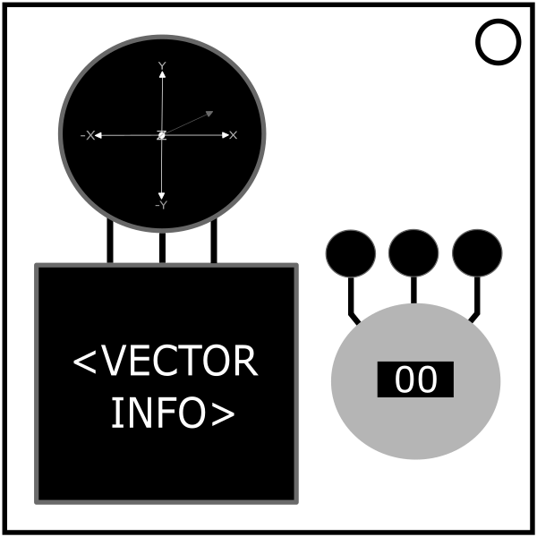

On the Subject of Vectors
Uhhh... What’s with the floating 3D arrows?
You are given a 3D display of vectors. You can see information about each of the vectors (up to 3) in order of increasing magnitude. To solve the module hold down the red button for the duration required. A strike will reset the module and give new vectors.
Since the module only displays the absolute values of the vector’s components, use the 3D display to determine the sign of each component.
Unicorn: If the bomb has 2 batteries, more than 2 port plates, an SND indicator, and one of the vector’s colors is blue, tap the button. This overrides all other rules.
Let M be the magnitude and x, y, z be the x-component, y-component and the z-component respectively.
1 Vector
Calculate the missing value using M = √(x2+y2+z2), or if the missing component is x, y or z: missing component = √(M2-(sum of squares of known)).
Look up the color of the vector and find it in the table below. Round to the nearest tenth.
| Vector Color | Number Calculation |
|---|---|
| Red | (# of batteries * 5) + 3 |
| Orange | Missing data value3 + 16 - # of Stereo RCA ports |
| Yellow | ((# of battery holders * 14) % 5) + 1 |
| Green | # of RJ-45 ports + 204 |
| Blue | 8 * (M + 11) |
| Purple | z % 3 |